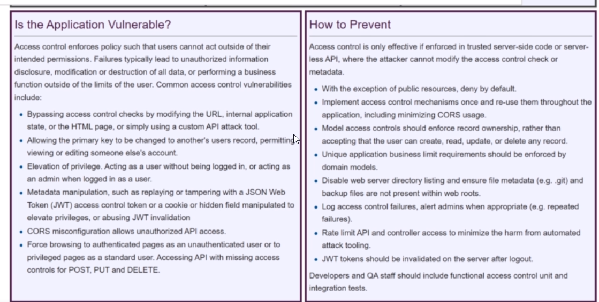

user gets access to somewhere they shouldnt have
lets say normal user gets admin access directyl
or through url u could just see random records of different people(this is called idor:insecure direct object reference)
